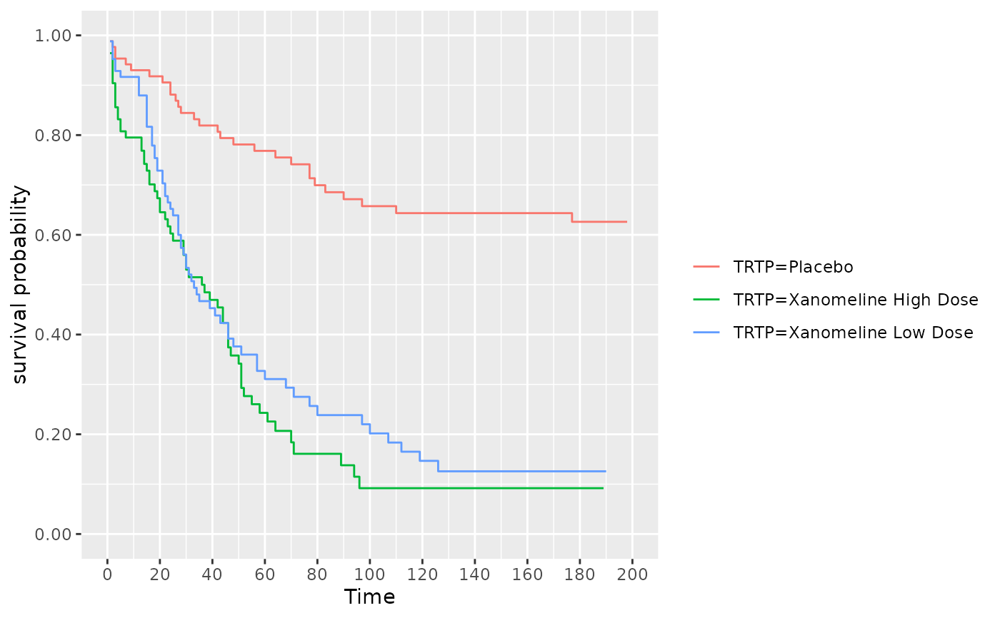
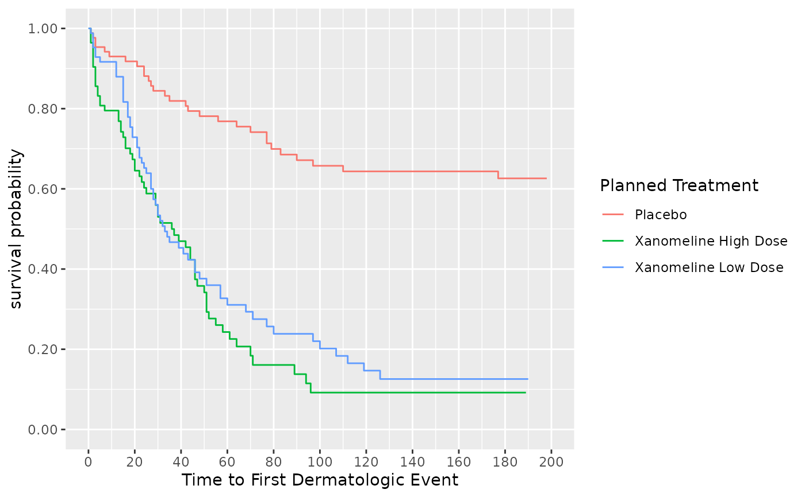
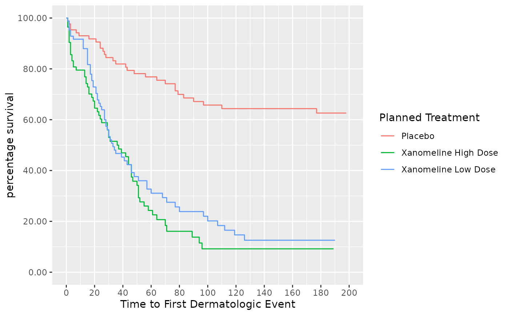
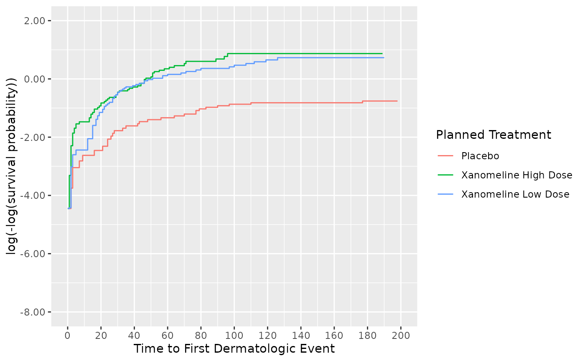
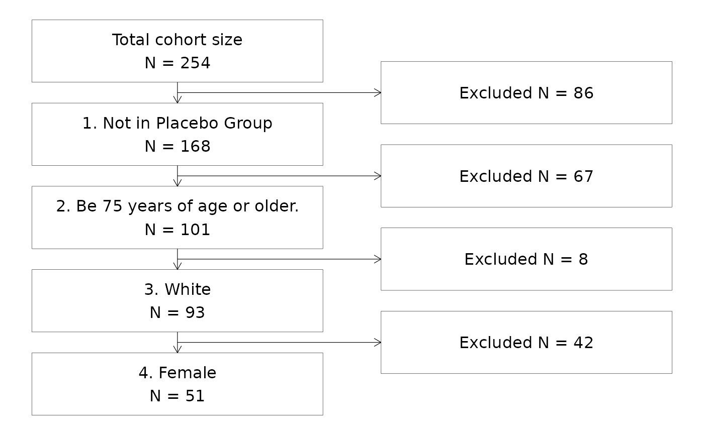
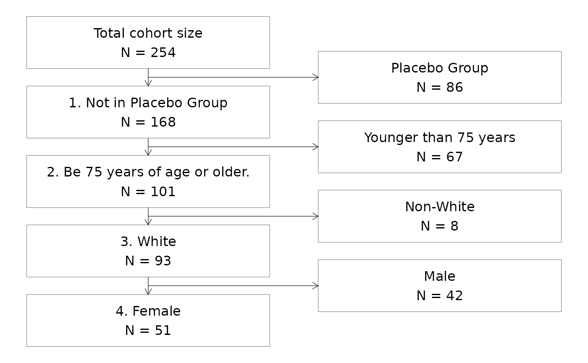
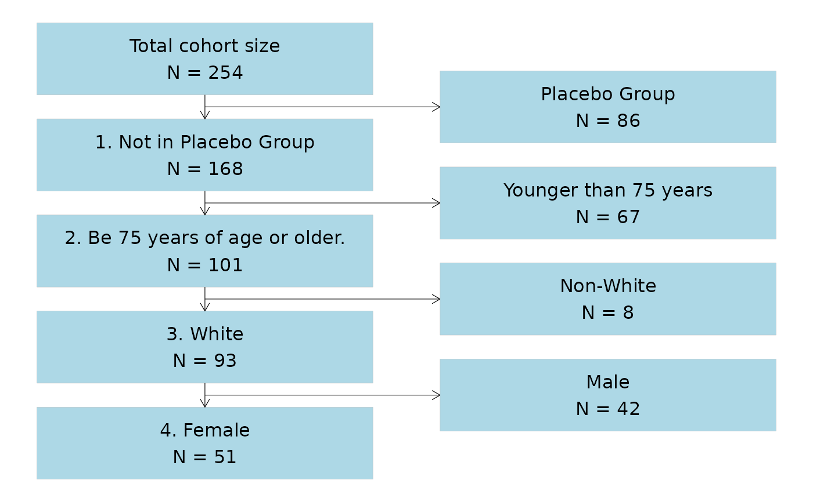
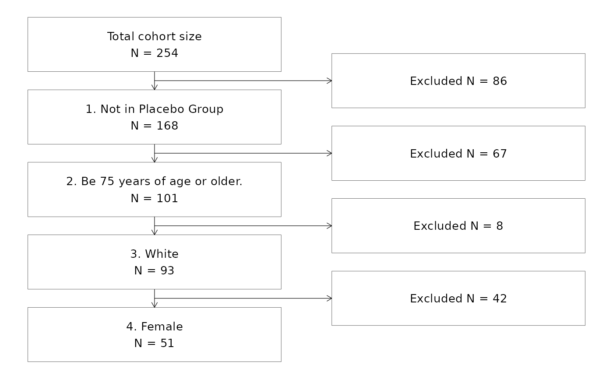

S3 method for creating plots directly from objects using ggplot2,
similar to the base R plot() function.
![[Questioning]](figures/lifecycle-questioning.svg) S3 function to draw a Consort flow diagram chart.
S3 function to draw a Consort flow diagram chart.
Usage
visr(x, ...)
# S3 method for default
visr(x, ...)
# S3 method for survfit
visr(
x = NULL,
x_label = NULL,
y_label = NULL,
x_units = NULL,
x_ticks = NULL,
y_ticks = NULL,
fun = "surv",
legend_position = "right",
...
)
# S3 method for attrition
visr(
x,
description_column_name = "Criteria",
value_column_name = "Remaining N",
complement_column_name = "",
box_width = 50,
font_size = 12,
fill = "white",
border = "black",
...
)
# S3 method for tidycuminc
visr(
x = NULL,
x_label = "Time",
y_label = "Cumulative Incidence",
x_units = NULL,
x_ticks = pretty(x$tidy$time, 10),
y_ticks = pretty(c(0, 1), 5),
legend_position = "right",
...
)Arguments
- x
Object of class
survfit,attritiontable, ortidycuminc- ...
other arguments passed on to the method
- x_label
characterLabel for the x-axis. When not specified, the function will look for"PARAM"or"PARAMCD"information in the original data set (CDISC standards). If no"PARAM"/"PARAMCD"information is available, the default x-axis label is"Time".- y_label
characterLabel for the y-axis. When not specified, the default will do a proposal, depending on thefunargument.- x_units
Unit to be added to the x_label (x_label (x_unit)). Default is NULL.
- x_ticks
Ticks for the x-axis. When not specified, the default will do a proposal.
- y_ticks
Ticks for the y-axis. When not specified, the default will do a proposal based on the
funargument.- fun
Function that represents the scale of the estimate. The current options are:
survis the survival probability. This is the default.logis log of the survival probabilityeventis the failure probabilitycloglogis log(-log(survival probability))pctis survival as a percentagelogpctis log survival as a percentagecumhazis the cumulative hazard
- legend_position
Specifies the legend position in the plot. Character values allowed are "top" "left" "bottom" "right". Numeric coordinates are also allowed. Default is "right".
- description_column_name
characterName of the column containing the inclusion descriptions- value_column_name
characterName of the column containing the remaining sample counts- complement_column_name
characterOptional: Name of the column containing the exclusion descriptions- box_width
characterThe box width for each box in the flow chart- font_size
characterThe fontsize in pt- fill
The color (string or hexcode) to use to fill the boxes in the flowchart
- border
The color (string or hexcode) to use for the borders of the boxes in the flowchart
Examples
# fit KM
km_fit <- survival::survfit(survival::Surv(AVAL, 1 - CNSR) ~ TRTP, data = adtte)
# plot curves using survival plot function
plot(km_fit)
# plot same curves using visR::visr plotting function
visR::visr(km_fit)

# estimate KM using visR wrapper
survfit_object <- visR::estimate_KM(data = adtte, strata = "TRTP")
# Plot survival probability
visR::visr(survfit_object, fun = "surv")

# Plot survival percentage
visR::visr(survfit_object, fun = "pct")

# Plot cumulative hazard
visR::visr(survfit_object, fun = "cloglog")
#> Warning: NAs introduced by y-axis transformation.

## Create attrition
attrition <- visR::get_attrition(adtte,
criteria_descriptions = c(
"1. Not in Placebo Group",
"2. Be 75 years of age or older.",
"3. White",
"4. Female"
),
criteria_conditions = c(
"TRTP != 'Placebo'",
"AGE >= 75",
"RACE=='WHITE'",
"SEX=='F'"
),
subject_column_name = "USUBJID"
)
## Draw a CONSORT attrition chart without specifying extra text for the complement
attrition %>%
visr("Criteria", "Remaining N")

## Add detailed complement descriptions to the "exclusion" part of the CONSORT diagram
# Step 1. Add new column to attrition dataframe
attrition$Complement <- c(
"NA",
"Placebo Group",
"Younger than 75 years",
"Non-White",
"Male"
)
# Step 2. Define the name of the column in the call to the plotting function
attrition %>%
visr("Criteria", "Remaining N", "Complement")

## Styling the CONSORT flowchart
# Change the fill and outline of the boxes in the flowchart
attrition %>%
visr("Criteria", "Remaining N", "Complement", fill = "lightblue", border = "grey")

## Adjust the font size in the boxes
attrition %>%
visr("Criteria", "Remaining N", font_size = 10)
